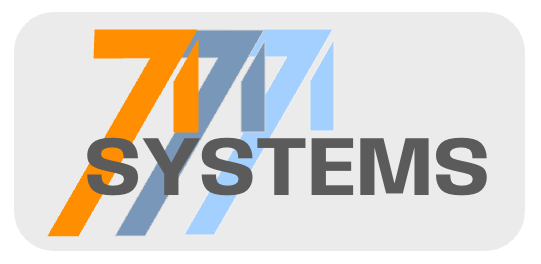

See the system
We uncover the relationships, constraints, and signals that determine performance.

Start a conversation71 Systems builds and supports ventures that transform complexity into clear decisions, confident action, and enduring value.
Our purpose
71 Systems is a multidisciplinary holding company that develops, operates, and supports businesses built to improve how people understand complexity, make decisions, manage work, and create lasting value.
Across our portfolio, we combine disciplined analysis, practical experience, applied technology, and thoughtful design to create advisory services, educational programs, software, analytical tools, and specialized products.
One operating philosophy
We uncover the relationships, constraints, and signals that determine performance.
We separate evidence from assumption and convert information into decision-ready insight.
We turn insight into practical tools, decisive action, and measurable outcomes.
The value we create
We turn complexity, specialized knowledge, and fragmented information into clear decisions and practical solutions.
Where we work
Independent businesses benefit from common strategic, technical, operational, and administrative resources—while retaining the identities needed to serve their customers.
What happens next matters